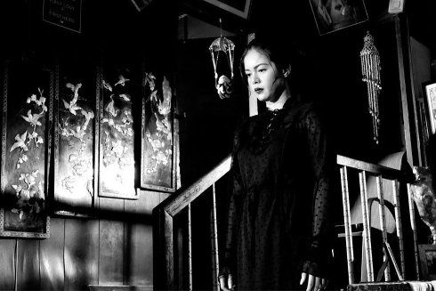

The Halt
Ang Hupa

Lav Diaz
Sonntag 13 okt | 18.30 | Filmmuseum
Science Fiction als Manifest gegen die autoritären Herrscher. Im Jahr 2034 sind die Philippinen in Aufruhr. Nach einem Vulkanausbruch herrschen ständige Dunkelheit, tödliche Seuchen und der Despot Nirvano Navarra. Drohnen und Soldaten machen Jagd auf Widerständige: Aktivisten, Künstler, Priester, Intellektuelle. Was ist die richtige Methode, um das Land von Navarra zu befreien?
„Diaz zeichnet in dem wohl am offensten politischen Film seiner bisherigen Karriere den Diktator als Karikatur, als blutrünstigen Kasper und debile Marionette, die unter der Kontrolle seiner Sicherheitskräfte steht - Ähnlichkeiten zu realen Machthabern nicht ausgeschlossen.” (Filmfest Hamburg)
Lav Diaz geb. 1958 in Cotabo / Philippinen. Lebt und arbeitet auf den Philippinen. In den frühen 90er Jahren ging Diaz in die USA und arbeitete dort als Journalist. Parallel dazu begann er als Drehbuchautor zu arbeiten und sein erstes Opus magnum BATANG WEST SIDE zu drehen. Diaz gehört zu den international erfolgreichsten philippinischen Independent-Regisseuren. Seine Filme über die philippinische Seele gewannen zahlreiche Preise auf den großen A-Festivals. UNDERDOX zeigt seit dem ersten Jahr seine überlangen Filme, die zum „Slow Cinema“ gehören. |
Filme Batang West Side 2002 | Evolution of a Filipino Family 2004 (1. UX) | Heremias 2006 | Melancholia 2008 | Butterflies Have No Memories 2009 (5. UX) | Norte, The End of the History 2013 (8. UX) | From What is Before 2014 (9. UX) | A Lullaby to the Sorrowful Mystery 2016 (11. UX) The Woman Who Left 2016 (12. UX) Season of the Devil 2018 (13. UX) The Halt 2019 |